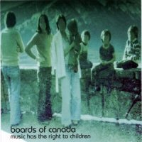

|  | |
| title | music has the right to children |
| label | matador |
| catalog | OLE 299-1, OLE 299-2 |
| country | usa |
| date | 22 Sep 1998 |
| format | 2xLP, CD |
| tracks | wildlife
analysis (1:17)
an eagle in your mind (6:23) the color of the fire (1:45) telephasic workshop (6:35) triangles and rhombuses (1:50) sixtyten (5:48) turquoise hexagon sun (5:07) kaini industries (0:59) bocuma (1:35) roygbiv (2:31) rue the whirl (6:39) aquarius (5:58) olson (1:31) pete standing alone (6:07) smokes quantity (3:07) open the light (4:25) one very important thought (1:14) happy cycling (7.55) |
| notes | "happy
cycling" is taken from the peel sessions "happy cycling" was omitted from 500 mispressed copies of the cd, made by emd manufacturing |